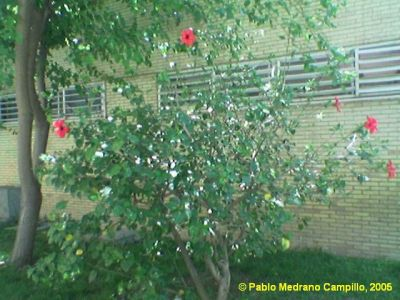
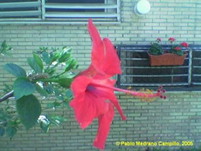

|
Hibiscus
x rosa-sinensis L.,
Sp.
Pl. 694 (1753)
H. cooperi × H. kaute |
Malváceas |
| Rosa de China, pacífico o hibisco | Arbusto perennifolio |
|
Arbusto perennifolio
de 1-3 m de
altura que en ocasiones, mediante podas, adquiere porte de
arbolillo.
Hojas simples, alternas y pecioladas; limbo de 7 x 10cm, ovado - lanceolado y dentado de forma irregular, de color verde lustroso. Flores grandes, solitarias en las axilas de las hojas superiores, hermafroditas, actinomorfas; epicáliz con 8 piezas lanceoladas; cáliz generalmente acampanado, con 5 lóbulos; pétalos de 5-10 cm de longitud; estambres reunidos en una columna estaminal que sobrepasa notablemente a la corola. Fruto cápsula pentagonal que contiene semillas del tamaño de lentejas. |
 |
|
 |
Observaciones:
Su
nombre
específico proviene del griego hibiskos,
nombre dado al malvavisco común en la época de
Dioscórides y Plinio.
En nuestro país su popularidad es manifiesta en las Islas Canarias y en todas las zonas del litoral de la Península y Baleares, que son las que tienen los climas más benignos.
Además de su interés en jardinería, dicen que
ayuda a reducir el encanecimiento, la pérdida del
cabello, las
puntas secas, y muchas otras irregularidades del cuero
cabelludo. Es un
acondicionador natural excelente.
También tienen aplicaciones en la cocina: con sus flores
se
prepara una infusión de fuerte y rico sabor que se dice
que
"induce al deseo".
|
| Área de origen.- Es un híbrido artificial originado en el sur del Pacífico. Se cultiva en Europa desde el s.XVIII | |
| Uso
en el campus: Un solo ejemplar
en el campus, usado como planta ornamental. |
Localización: |
| Pablo
Medrano Campillo & Carlos
Romero Zarco, 2005 Versión 2: C.R.Z. (2026) |
|